Brief
My aim is to design a website for the U19 NZ Girls UWH squad members, coaches, and supporters. I hope to create a common place to find information about camps, training and more which is accessible and useful for a range of consumers. Below are some basic aims of this project which will help me achieve checkpoints to build this in a structured process.
- Create a basic plan with layout designs, colour pallet and features of the website
- Research the kinds of people who will be interested in this product to cater to a certain demographic
- Look at websites that have had similar function in the past to find inspiration and see what did/did not do well
Initial Project Backlog
Here is a screenshot of my project backlog about halfway through my project
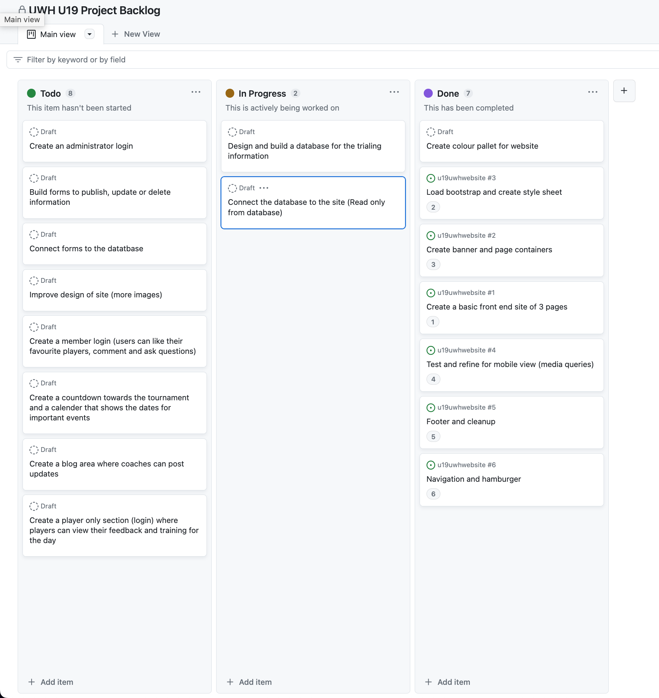Big Overview Backlog Plan
This is a screenshot of the big backlog board of all the tasks that would need to be done throughout this project
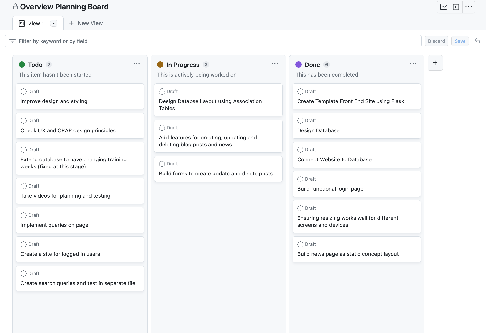Relevant Implications: Describe
Aesthetics
Does the program look attractive to its users? If a website or digital media does not look appealing to a user
they are unlikely to continue to use it and thus the website will be less successful. Does the colour pallet
and design match with the purpose of the website? Do the aesthetics of the website reflect its purpose?
Sustainability/Future Proofing:
Is the program easy to add new features to? Maintaining and adding to the program should be easy if the program has been well made.
Making a change should not require major reconfiguration of the code. This means that a program should be designed to avoid repeating
information. If the program is designed so that code is repeated, it makes it much harder and more prone to errors, to try and change
or alter any of the information if needed.
Usability:
Is the program easy to understand? Is the output of the program easy to understand for the user? The program should use regular
english and 'speak the user's language', not "tech" language to make sure that the user can easily understand the information they
are being presented. The commands and requests for input should be intiutive and not likely to cause confusion for the user.
Front End Development
Brainstorming and sketches
Sprint One
Sprint One Aim
In this sprint, I am aiming to get a basic home page deisged and trial different styles and aesthetics to see what best suits the needs of the website
Repository Link
This involved lots of trialling and testing as well as talking to the coaches and demographic of the website to see what they thought looked best and seemed most intuitive
Basic Test of Program
This video shows the current basic front page state of website along with some resizing
Sprint review: Where to next?
This was the initial design, and it helped me to get a good idea of the kinds of colours, fonts and styles that I would like to focus on for this website. By using Bootstrap 5, I was able to do this quite easily and use the built-in features to help with resizing and working on how the elements would adjust to different devices. To save time, I was able to use the root style to set colour variables and make these automatic. Although everything was working as expected, I want to improve on the colour design of the website to make it consistent with the theme (maybe a sort of ocean colour scheme) as well as improving my coloumn designs.
This screenshot shows the process of pushing the updated code into my github repository, so that it can keep up to date with each sprint. It's very important to add detailed messages to each push so that when later reviewing the repository, I can see exactly what each push involved and retrieve or review certain changes of pieces of code.
Backlog grooming
Backlog after sprint one. Several items have been moved into the 'Done' section.
Sprint Two
Sprint Two Aim
In this sprint, I aim to improve the design of my website and add features, like creating new pages aside from the homepage.
The updates to the style, font and colour scheme shown in this video.
Sprint Two Review
I made several style updates in this sprint, such as improving the design of the texts and coloumns , and looking for better images to use. This being said, I still think the images I am using could be improved a lot so I will continue to look for better quality images that are more consistent style and colour. Currently, the image of Bex is black and white, while the one of Cam is colour, which is a design inconsistency problem.
Bootstrap layouts
Testing different screen sizes
Sprint Three
Sprint Three Aim
In this sprint, I am to design the other pages of the website now that I have designed and refined the front page of my site. I will do this using the flask framework, where I can extend the layout template page with the content of the individual pages to make them unique.
Basic test of program

Sprint Three Review: Errors and Trials

Backlog grooming

Developing a Database and integrating into the Website
Relevant implications database (describe)
Starting design
This is my initial design of the database for my website. The most important tables are member and events as they will allow the users to log in and view different content as well as the blog allowing members to post and view the lastest updates for the squad. Coaches will be able to update and delete blog posts, hall of fame members and add camps.
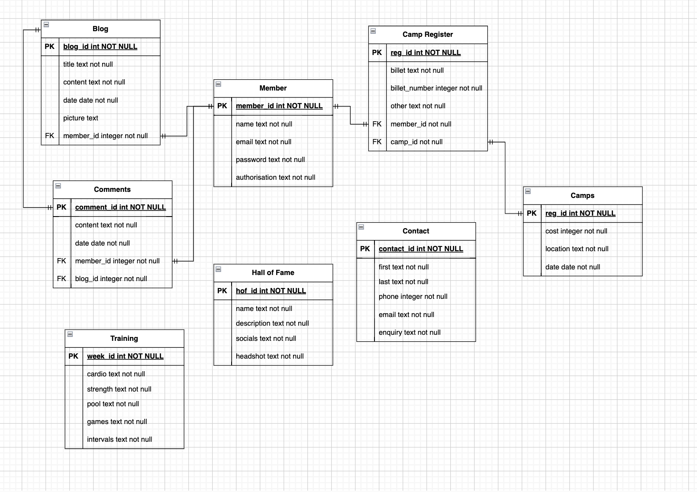
Sprint Four
Sprint Four Aim
In this sprint, I am going to work on starting to make databases and run basic queries to display the information within the database.
A Basic Query
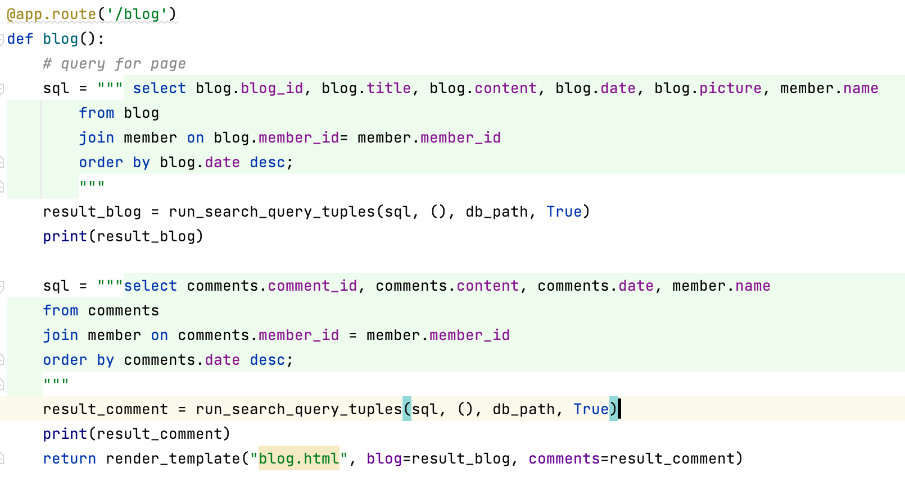
The Blog Post from Database
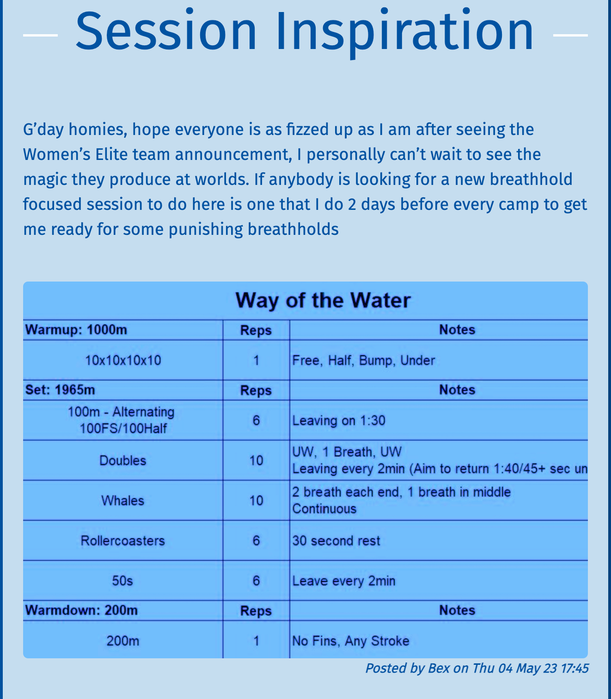
Sprint Five
Sprint Five Aim
In this sprint, I aim to make the initial design of the database. I will create only two basic tables: blog and member. I will then link these two databases and try to run some queries with them.
Database plans
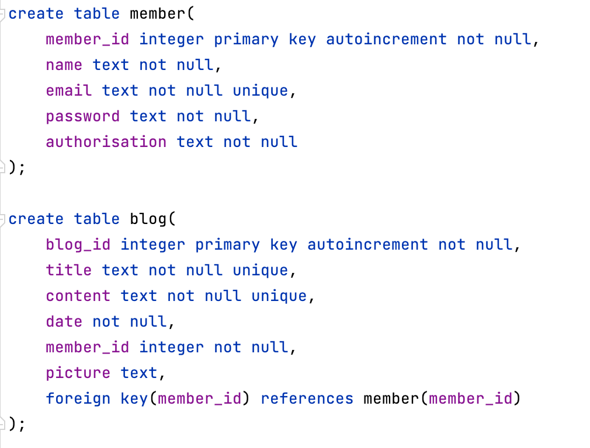Insertations of dummy data into the databases
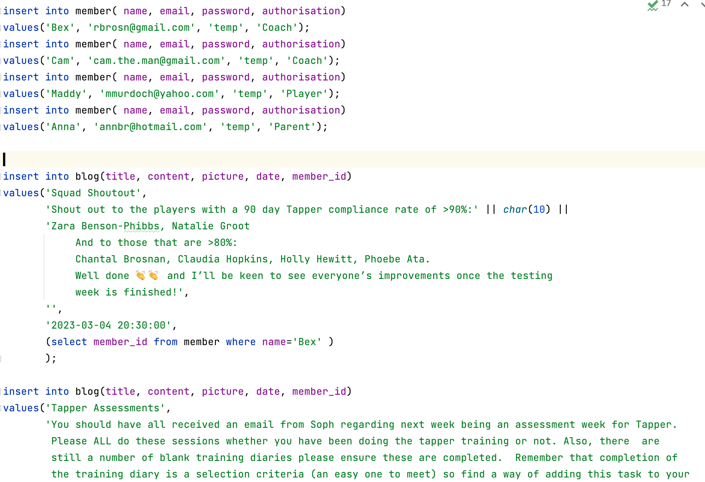Basic Test of Program
The process of creating the databases was confusing and tricky ad it could be strongly effected by a small error or typo. This meant a very important part of this process was to use testing files to experiment with different code and queries to make sure my code was completing the desired tasks before implimenting the code into my proper files.
Sprint Six
Sprint Six Aim
In this sprint, I aim to build my blog post page using the database to load posts and text as well as refining the code to reduce chance of errors and future proofing.
Planning Board for the Blog Page
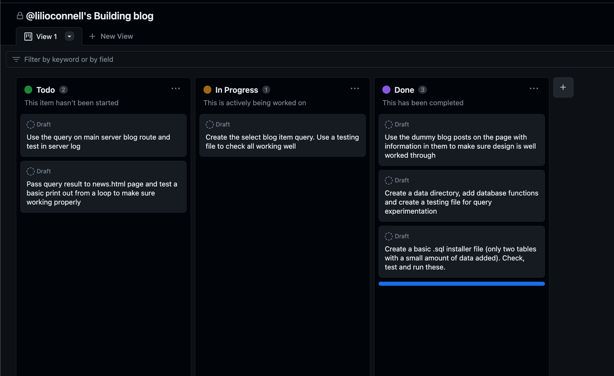Current project backlog

Current Blog Standing
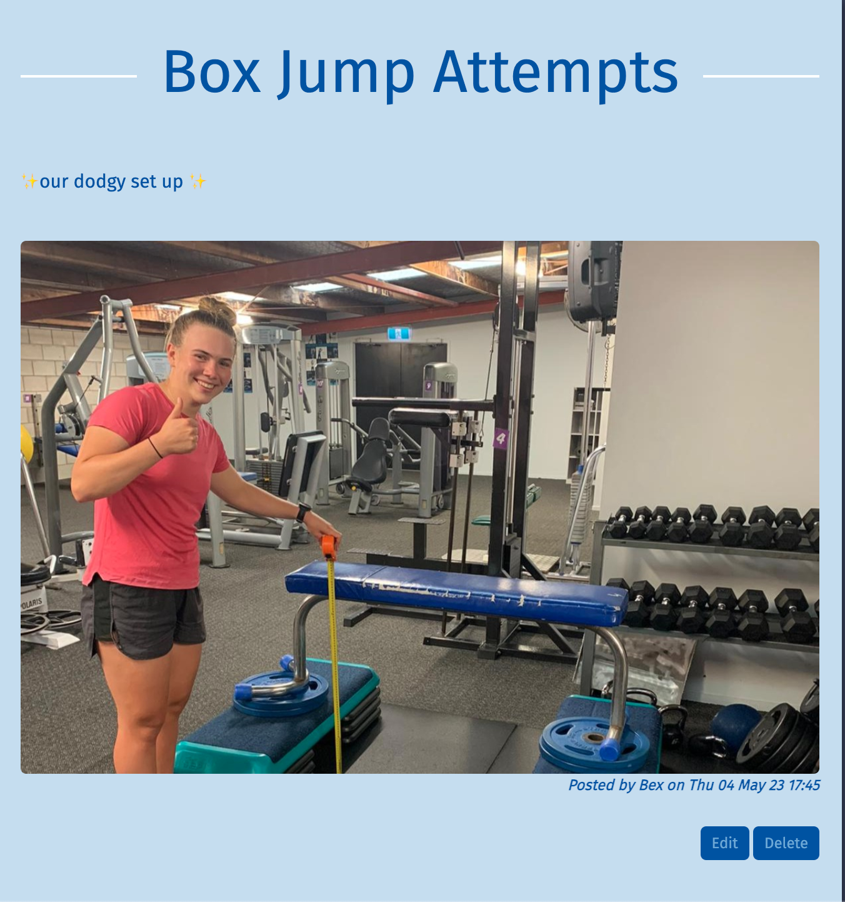This is the design for by blog post page, which is currently nicely designed, but does not actually function. The current posts are 'dummy' posts used to test the style of the page, but not actually connected to the database. By connecting the database, the buttons will become functional and will be useful to the authorised users once they log in.
server.py Blog Route Code
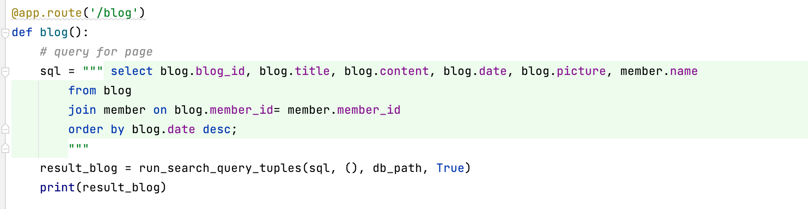blog.html code
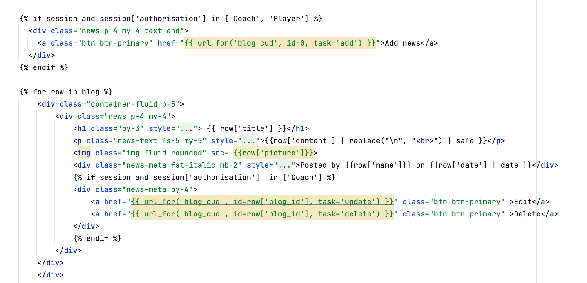Printing outputs from queries to test functionality
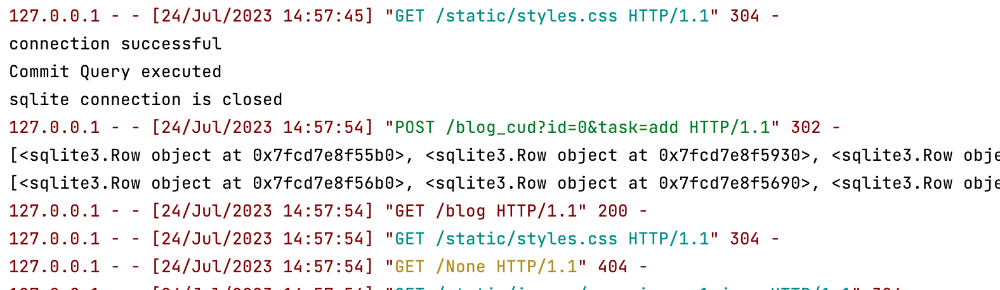The posts active on the website
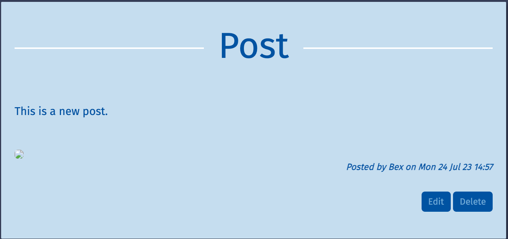Sprint Six Errors and Review
The first problem I had in this sprint was some errors in the way I had written the code for my databases. I had been careless with some of the queries and making sure everything was connected securely and properly so when I wrote the query to add a comment, I forgot to write that there was a blog_id as well and where to import this from. This meant that I got this error, which ended up being a very quick fix which is now functioning fine.
The second problem I faced was around unique contraints. The user was able to input their email when signing up, and in the database this email was required to be unique. However, in the form I had not put any code in to make sure that the email coming through was valid, so instead of telling the user they neeeded to use a different email, it simply ran the query and failed, crashing the progrem. To solve this I made sure there was sufficient validation on my form and made sure that the server ran through the code properly before running the query.
Sprint Seven
Sprint Seven Aim
In this sprint I am going to fix errors with my comments code, and the problems with my images. Currently, the images I have are displayed on the site, but when the user makes a blog post or a new hall of fame member is added, their image is not properly loaded into the site and does not show up. This is going to be a very challenging problem to fix.
Current state of image uploads
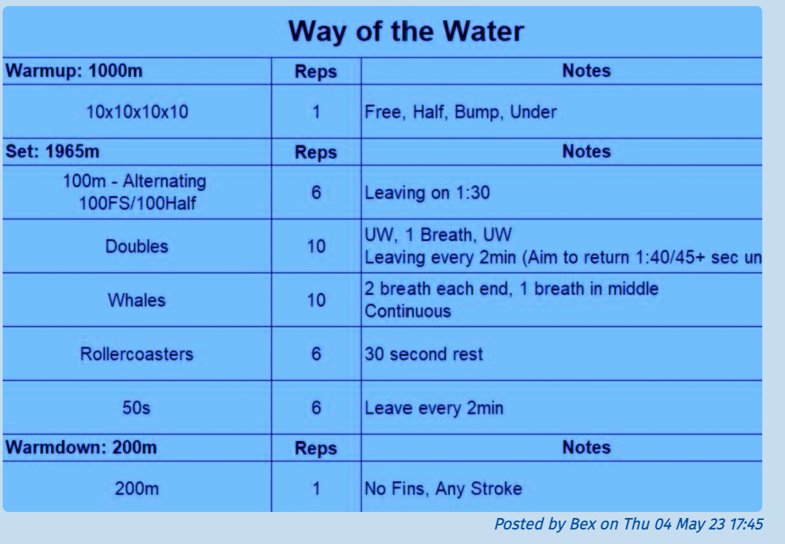A post pre-loaded into the database
The blog posting form
The post not showing the image.
Trying to solve this
To solve this problem I did a lot of research and looked through other websites who had the features I was looking for, to see how they had layed out their code and databases.
An example site I was using to help me solve the problem.
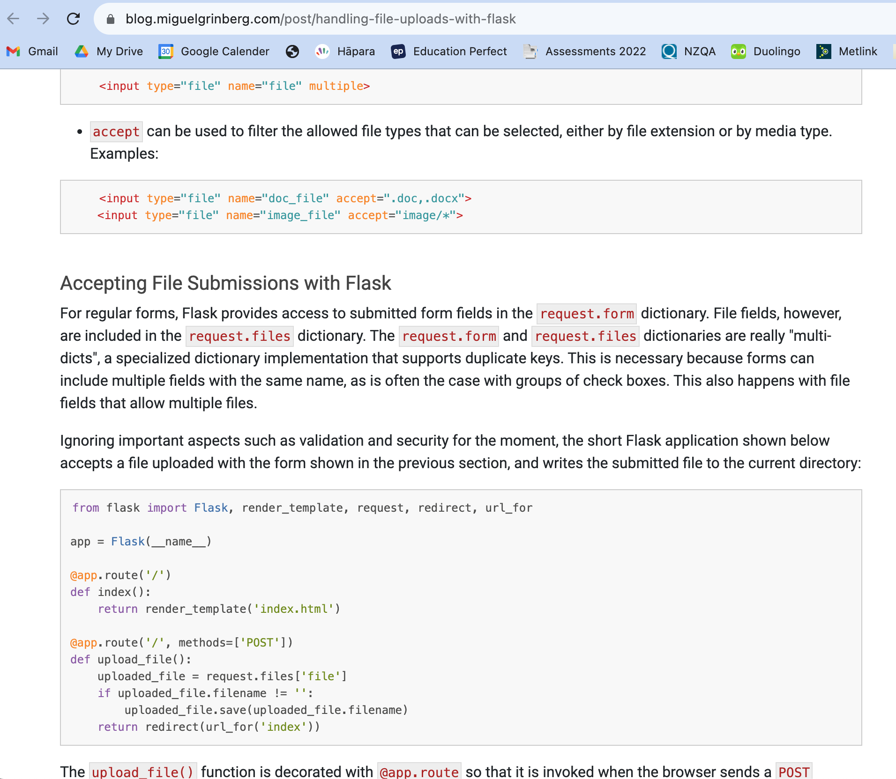I ended up needing a folder, which I would then upload the chosen image to which directed it into my static folder. After this the image could be put into the database and seen on the site.
I faced another issue later, once I had fixed the image problems. This was in my blog, where an image was not mandatory, the program no longer knew how to cope if an image was not provided. To solve this, I created a place holder image that was put into the database if not image was supplied.
One problem I was not yet able to solve was that if the title of the file has spaces in it the database will add dashes between these and the file name will no longer be the same in the folder and the database, so the website will not register the image and it will not be shown.
An example of this
Video Run Throughs
Above are videos showing how the databases work in the website when logged in and logged out.
Overall Reflection
What I would do differently:
If I were to do a project like this again, I think it would’ve been a great idea to make a much more detailed plan beforehand. This would mean I could know
exactly what I was intending to do each day and make specific goals and checkpoints to make the process seem less strenuous. I think each sprint could use a more specific backlog that is to be altered
as the sprint proceeds. I also could have benefited from better time managment skills and prioritising the most crucial elements of the code since I often decided to begin working without really
knowing what needed to be done and forgetting certain things that created errors in the long run.
What I learnt:
Overall, I learnt a lot about how complex databases connect and how this must be done to make sure everything is successfull and errors are prevented. Firstly, commiting regularly to github is very important to
make sure that no progress is lost in the databases, as throughout this project I began using a new computer, and some of the files that had been on my previous computer did not transfer and if not
for my git hub commits would have been lost completely. I also learnt the importance of not writing overly complicated code, so that when errors do inevitably occur, they can be much more easily identified
and solved as opposed to looking for an unnecessarily long amount of time through the code for what has gone wrong. Overall, my knowledge about code and the processes involved in a successful
program development has been expanded a lot and I feel much more confident in my abilities.
Revelant Implications: Address
Privacy:
This database cannot be accessed on http://127.0.0.1:5000/data (gives a page not found error). I have made sure that I haven’t requested any potentially dangerous or overly
personal information from the users, only their name and email. By not asking for the phone number, any bank details or other personal information, this ensures that the
users can stay safe were the database to be invaded by anyone with malicious intent. In the future it would be good to have the passwords hashed within the database as well,
but this was outside my current capabilties.
Functionality:
To make sure that the database and website work properly and efficiently, I tested the code regularly and ran test quieries in a seperate file before inputting them into my server
to make sure no problems were occuring. This was very useful as several errors did occur and I could solve these much more easily with a reduced amount of code in the test file as
opposed to hunting through the server where the problem could have occured in several different places. I also made sure to have certain restraints of the data that could be put
into the database, such as unique contraints on the user email. This means that each email only occurs once in the database and if it needs to be used in other parts of the database,
there is no confusion around which file is the required file. The sql installer file also helped me to simply create the database and feel ok about making changes when they needed to
be made, as I could easiy delete and remake the database during the development process.
Usability:
I have made sure that the program 'speaks the users language'. I did this by making sure all my request messages were clear, so the user knew exactly what they were expected to do. I also
tried to make my error messages and requests human-like, by making them slightly less formal. This means that the user can understand much more clearly what is expected of them. I also asked
several friends and family members to try using my program and critique me on what they found difficult or confusing. This means I now know that the interface of my program will be understood
by a range of people and not just make sense to myself and those in the coding world.
Future Proofing:
I have made sure that the functions are appropriately named and well organised. This means that if I were to come back to the program at a later date to add any new code or make adjustments, the code will be easy to understand and alter. I also thoroughly doctyped and commented my code, so that I know what purpose each function serves and what each argument represents. I also tried to compress any process that was repeatedly used into a function, so that it could be called when needed. By doing this, I prevented having to write almost identical code several times, meaning there is much less clutter within functions. This also means that if changes need to be made for a certain process or command, a change only needs to be made once, instead of several times throughout the code.